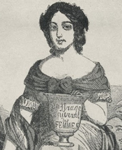
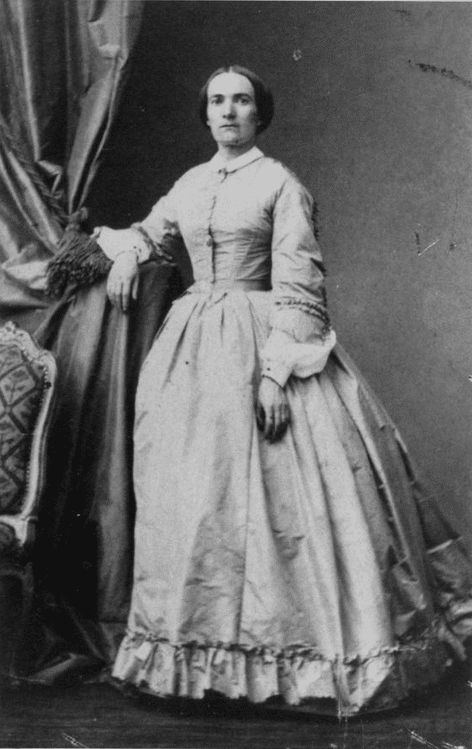
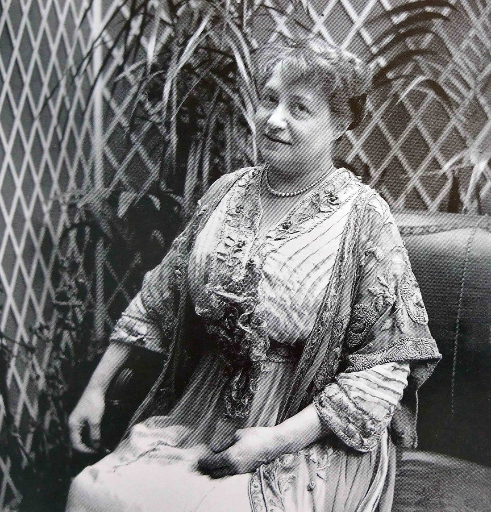
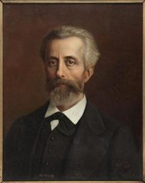
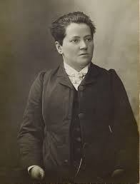
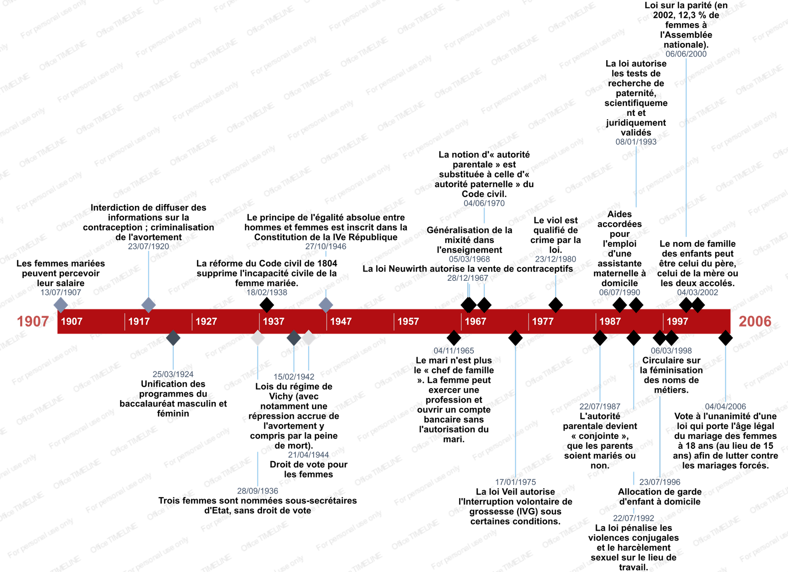

C'est un ensemble d'actions et de manifestations dans un mouvement philosophique qui a un but de promouvoir la liberté, l'égalité dans la société des hommes et des femmes. C'est un mouvement qui lutte contre les inégalités des sexes, qui défend les femmes qui sont maltraitées ou exclues.
Hubertine Auclert, féministe, donne tout son sens au terme de "féminisme" par ses idées d'émancipation des femmes.
Du XIXe siècle à nos jours, femmes et hommes féministes se sont battus pour l'égalité entre les deux sexes. En voici quelques personnalités :

Jeanne Deroin
Autodidacte, institutrice, rédige un plaidoyer contre "la soumission des femmes". Fonde "La politique des Femmes en 1848. Elle lutte pour l'égalité des sexes.
André Léo
Romancière, journaliste militante féministe. Elle publie des reportages sur le travail. En 1866, elle crée l'Association pour l'amélioration de l'enseignement des femmes. Elle est à l'origine de la Première vague féministe.

Julie-Victoire Daubié
Journaliste, militante féministe, elle est la première femme ayant obtenu le baccalauréat le 17 août 1861. Elle milite pour le droit des femmes, défend les enfants adultérins privés de droits.

Marguerite Durand
Journaliste, femme politique et féministe, elle fonde le journal La Fronde en 1897. Elle est notamment socialiste et anti-cléricale.
Hubertine Auclert
Journaliste féministe, elle s'est battue en faveur de l'éligibilité des femmes et leur droit de vote. Elle veut une révision du code Napoléon. En 1876 elle fonde la société Le Droit des Femmes. Elle lance le journal La Citoyenne en 1881. Elle se bat également pour les droits des femmes en Algérie.

Léon Richer
Journaliste libre-penseur féministe, il est considéré comme le fondateur du féminisme. Il a fondé l'hebdomadaire Le Droit des Femmes et la "Société pour l'amélioration du sort des femmes" qui a organisé un banquet féministe.
Maria Deraismes
Femme de lettres féministe, c'est la première femme initiée à la franc-maçonnerie en France et elle crée l'ordre maçonnique mixte international "Le Droit humain" Elle coorganise le Congrès international du droit des femmes.

Madeleine Pelletier
Première femme médecin en psychiatrie en 1906, engagée politiquement et féministe. Elle est franc-maçonne. Elle rejoint la Section française de l'Internationale ouvrière.
Frise chronologique des droits de la femme, grâce au mouvement féministe (frise chronologique réalisée avec OfficeTimeline)

Evénements les plus marquants du féminisme
le droit de vote accordé aux femmes
En 1944, Charles de Gaulle accorde le vote aux femmes par l'ordonnance du 21 avril 1944, après la libération de la France. Les françaises votent pour la toute première fois aux élections municipales de 1945.
LA MODE GARçonne
Pendant les années folles, le terme de garçonne désigne un courant de mode qui qualifie l'émancipation des femmes et le désir d'une égalité des sexes. Ce mouvement est caractérisé par une apparence andrrogyne, la coupe des robes et des cheveux des femmes sont raccourcies. Parmi les égéries les plus connues, Coco Chanel marque son époque par sa façon de s'habiller.
LA PILULE CONTRACEPTIVE
Véritable révolution, sur le marché à la fin des années 1960, la pilule contraceptive libère du temps aux femmes désireuses de poursuivre leurs études ou de faire carrière. C'est la première fois que la sexualité et la reproduction ne sont plus liées.